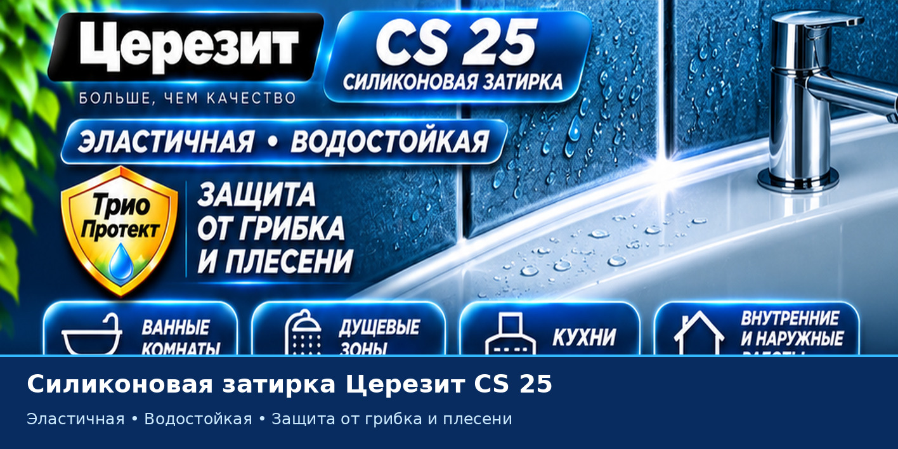
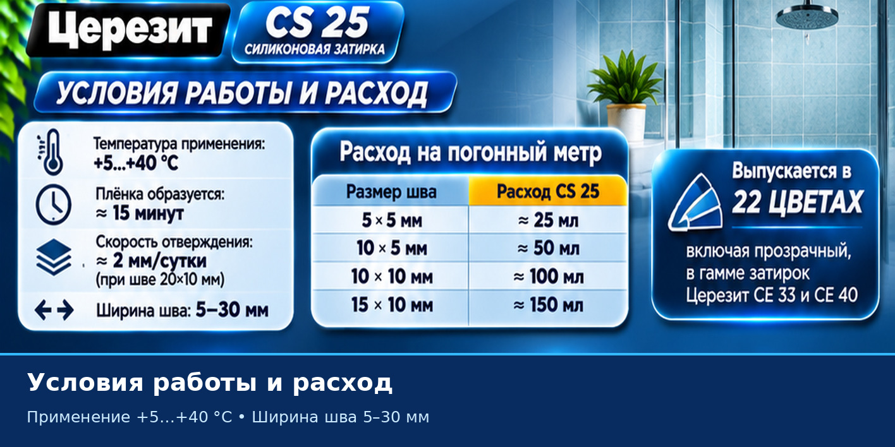

Условия измерений
Показатели времени плёнкообразования и отверждения приведены для +23 °C и влажности воздуха 50%.
Дополнительные характеристики
Термостойкость после отверждения: −40…+120 °C. Хранение: 0…+30 °C. Транспортировка: −20…+50 °C. Плотность: около 0,97 г/см³.
Важно при нанесении
Толщина слоя — примерно половина ширины шва. Свежие остатки удаляются спиртом или ацетоном, затвердевшие — только механически. Силикон должен контактировать только с боковыми кромками деформационного шва.